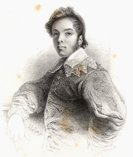

|
|
|||||||||||
|
|
Home | Corson Collection | Biography | Works | Image Collection | Recent Publications | Correspondence | Forthcoming Events | Links | E-texts | Contact Andrew Geddes (1783-1844)The painter and etcher Andrew Geddes was born on 5 April 1783 in Edinburgh, where his father was Deputy-Auditor of Excise and a keen connoisseur and collector of art. Although Geddes showed early talent for art, he was placed as a clerk in his father's office after completing a classical education at the High School and University of Edinburgh. It was only after his father's death in 1803 that Geddes took the step of devoting himself entirely to art. In 1806, he travelled to London to study at the Royal Academy and, in the same year, exhibited his first painting 'St. John in the Wilderness'. Among his colleagues at the Academy was his countryman David Wilkie, who became a close friend and with whom he would be strongly associated in the public mind. As a mature student, Geddes felt that he could not afford, financially or professionally, to complete a full ten-year course of studies at the Academy and in 1810, he returned to Edinburgh and opened a studio in York Place. He was soon in constant demand as a portrait-painter, portraying, amongst others, the novelist Henry Mackenzie, the publisher and bookseller Archibald Constable, the antiquary George Chalmers, and his fellows artists Wilkie, William Allan, Alexander Nasmyth, Benjamin Robert Haydon, Archibald Skirving, Anthony Stewart, the Revd. John Thomson, Andrew Wilson, George Sanders, and Nathaniel Plimer (his future father-in-law).
Although frustrated in his attempts to secure election to Associate membership of the Royal Academy, Geddes transferred his studio to London and continued to attract prestigious commissions throughout the 1820s, notably a massive portrait of Frederick August, Duke of York. In 1826, following Wilkie's example, he published a limited edition of portfolios of etchings. Geddes is now perhaps more highly regarded as an etcher than as a painter and has been credited with heralding an etching revival. His collected etchings -- including portraits such as Mrs Geddes, the Artist's Mother, George Chalmers, and Sir William Allan, and landscapes like The Field of Bannockburn and the Bore Stone and Peckham Rye -- were published by the collector David Laing in 1875.
Following Geddes's marriage to Adela Plimer (his future biographer) in 1827, he set out for a three-year sojourn in Italy and engaged in a lengthy study of the artists of the Venetian School. His decision to return to London in 1831 was partly prompted by the onset of consumption. On his way home, he made a stay in Munich to study the Rubens collections. Back in London, he was finally elected Associate member of the Academy in 1832. Throughout the 1830s, Geddes continued to exhibit portraits, landscapes, and subject paintings, the latter increasingly displaying literary and religious motifs. In 1839, he travelled to Holland to study Rembrandt whom he particularly admired as an etcher. Geddes suffered a renewed attack of consumption in spring 1844 but refused all medical assistance in his effort to complete his submissions to the annual exhibition of the Royal Academy. These included Geddes's only other Scott-related project: an imaginary portrait of Jenny Denison, Edith Bellenden's maidservant in The Tale of Old Mortality. Geddes died in his wife's arms on 5 May 1844.
Bibliography
Last updated: 12-Sept-2005
|
||||||||||